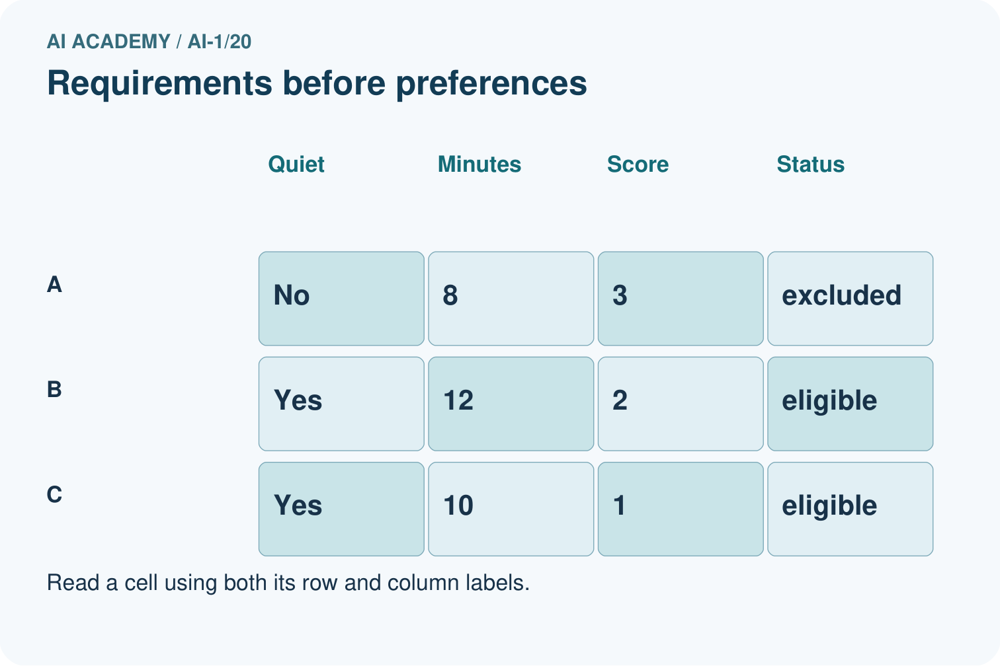
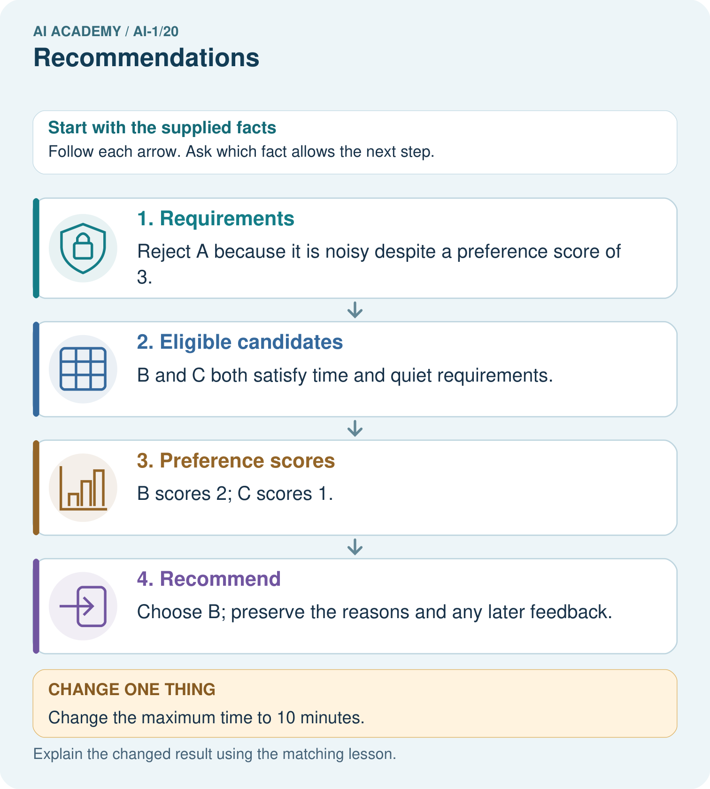
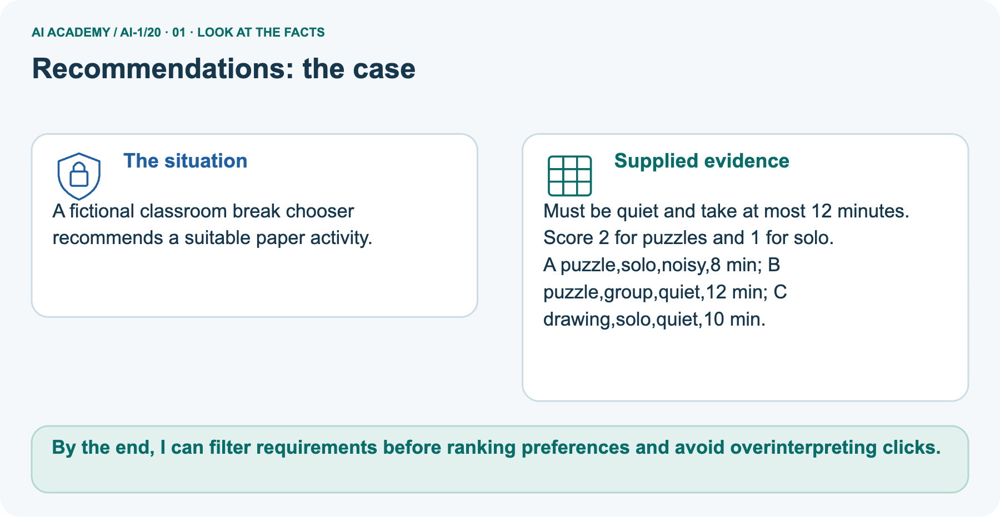
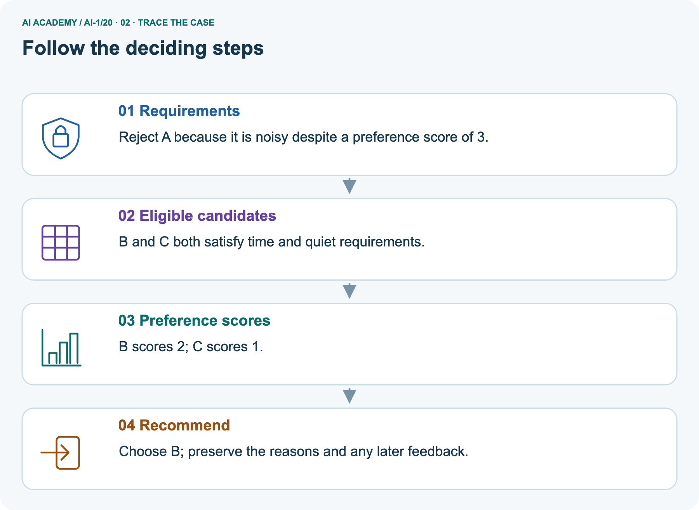
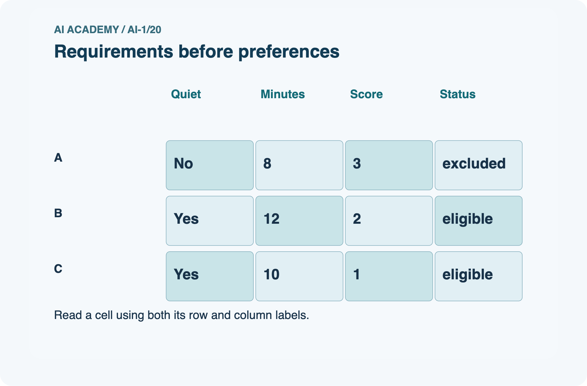
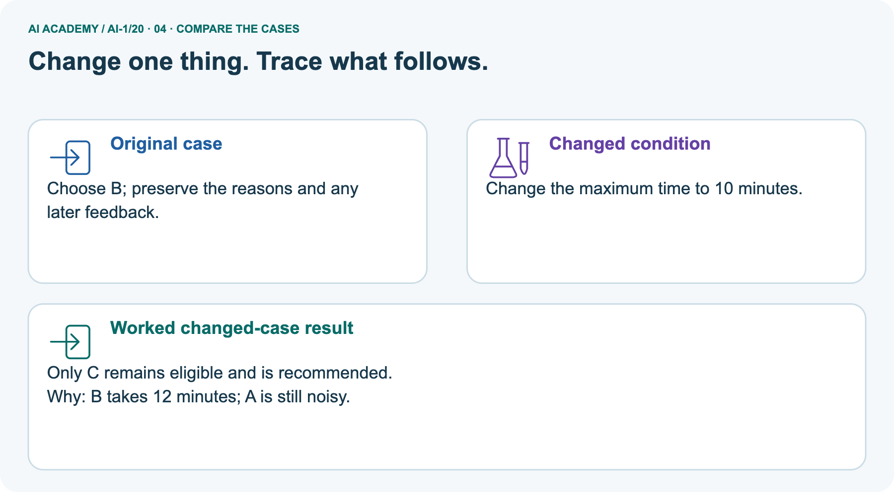
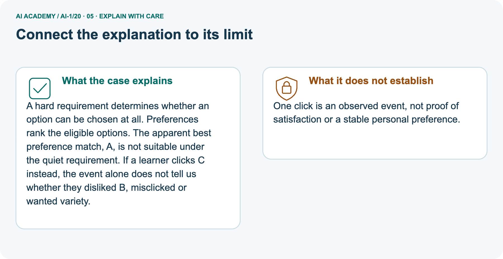
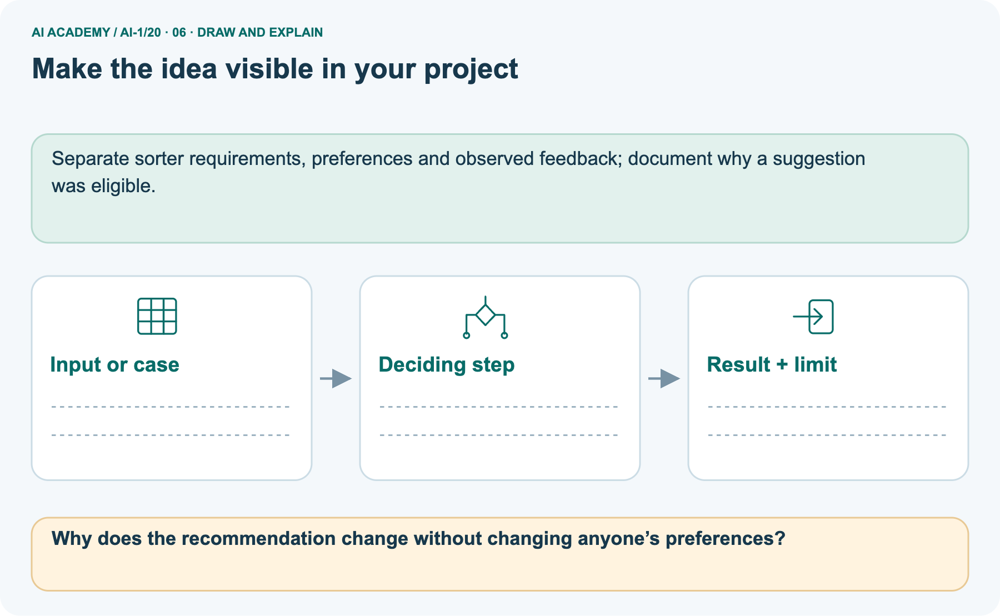

AI Academy · Level 1 · Grade 6 · Week 20 · Workbook
Recommendations
Learn to understand, design, build, test and explain AI systems responsibly.
Project: Helpful Classroom Sorter
Workbook · 1 of 21
Recall and choose your starting point
Record your starting explanation for Recommendations before opening notes. Show any later correction separately.
Try the recall before opening notes. Then use a different colour or a labelled second line to correct your explanation.
Similarity
Without opening the old lesson, explain one key idea from Similarity. Give an example and a mistake that the idea helps you avoid.
Prediction Is Not Fact
Without opening the old lesson, explain one key idea from Prediction Is Not Fact. Give an example and a mistake that the idea helps you avoid.
Build a Human Classifier
Without opening the old lesson, explain one key idea from Build a Human Classifier. Give an example and a mistake that the idea helps you avoid.
Workbook · 2 of 21
Practise with fading help
Complete the supported Recommendations trace and record the first step you can explain without help.
Use W2: Explain a recommendation honestly for Recommendations and feedback. Record the answer once; the lesson and workbook refer to the same attempt.
| Given inputs | Procedure I chose | Middle steps | Result and check |
|---|---|---|---|
Workbook · 3 of 21
Individual reasoning check
Check the proposed Recommendations explanation against the supplied facts before discussing it.
Use the worked case for Recommendations and feedback. Proposed explanation: “A high score can cancel a failed requirement”. Decide whether this explanation is supported.
Point to the step or supplied fact that decides; explain your repair if needed.
Workbook · 4 of 21
Independent transfer case
Write one first attempt at the reserved independent case before feedback. Repeated copies of that case refer to the same recorded attempt.
Independent case: Transfer the process to activities
A fictional learner needs an indoor activity lasting at most 20 minutes. Preferences score 2 for drawing and 1 for solo.
Candidates: A drawing, solo, outdoor, 10 minutes; B drawing, group, indoor, 20 minutes; C music, solo, indoor, 15 minutes; D drawing, group, indoor, 18 minutes. Filter, score and return all highest scorers.
Only B is then shown and selected; C and D are not shown. State what the feedback establishes and what remains unknown.
Attempt this case before feedback. Record any help. Earlier examples below are further practice; a case already practised with feedback cannot establish fresh transfer.
Workbook · 5 of 21
Your learning target
Connect the Recommendations target to a trace and a justified conclusion.
A system shows only adventure books and records only adventure clicks. It concludes the reader dislikes poetry. Explain the missing evidence and propose a small test.
Workbook · 6 of 21
Solve the given case
Solve the supplied Recommendations case and show the deciding evidence.
A recommender suggests adventure books after one adventure-book choice.
Explain its evidence and limitation.
Show your trace, calculation or evidence
Workbook · 7 of 21
Check a changed case
Apply the procedure to the changed case and record why the conclusion follows.
A recommender suggests a space book because you liked two space books. Does the suggestion prove you will enjoy it? What feedback could help next time?
My independent answer and reason
Week 20 Test and reflect
Workbook · 8 of 21
Design a revealing test
Specify a changed input, expected result and observation separately.
Create a changed input, boundary case or missing-information case. Write the expected answer or safe response before testing.
| Test record | My evidence |
|---|---|
| Changed input or condition | |
| Expected answer or fallback | |
| Observed result | |
| Why the result occurred |
Workbook · 9 of 21
Project checkpoint
Justify what Recommendations adds to Helpful Classroom Sorter and keep the evidence.
If the sorter ranks bins, state the objective and show why the top suggestion is not a command.
The project change and evidence I will keep
Workbook · 10 of 21
Self check
Judge explanation, evidence, transfer and limits separately; attach the work behind your judgement.
- I can explain the mechanism.
- I can show evidence.
- I can handle a changed case.
- I can name a limit.
Mark each as not yet, with help or independently, and attach supporting work.
Teacher review ____________________ Next step ____________________
Workbook · 11 of 21
Transfer practice from the original programme
Use this earlier case as transfer practice. A case already discussed with feedback is not fresh assessment evidence.
A system shows only adventure books and records only adventure clicks. It concludes the reader dislikes poetry. Explain the missing evidence and propose a small test.
Record support used: none, hint or teacher explanation.
Workbook · 12 of 21
W1 Filter before scoring
Filter before scoring. Apply the supplied Recommendations facts and keep your reasoning.
Apply BookRec1 to J, K, L and M from the lesson. State eligibility or exclusion reason for each, the scores of eligible books and the recommendation. Explain why L’s two preference matches do not make it the winner.
Workbook · 13 of 21
W2 Explain a recommendation honestly
Explain a recommendation honestly. Apply the supplied Recommendations facts and keep your reasoning.
Write an explanation of why J was recommended that mentions one preference it does not match. A marketer adds guaranteed enjoyment. Explain why that phrase is unsupported.
Workbook · 14 of 21
W3 Do not label an unseen item rejected
Do not label an unseen item rejected. Apply the supplied Recommendations facts and keep your reasoning.
J was shown and clicked. K was never shown. Separate the observed records from the labels enjoyed and disliked. Write a question that could gather a stated reason while allowing no answer.
Workbook · 15 of 21
W4 Transfer the process to activities
Attempt before feedback. If this repeats the selected independent case, reuse that first attempt; otherwise keep a separate record. Transfer the process to activities. Apply the supplied Recommendations facts and keep your reasoning.
A fictional learner needs an indoor activity lasting at most 20 minutes. Preferences score 2 for drawing and 1 for solo.
Candidates: A drawing, solo, outdoor, 10 minutes; B drawing, group, indoor, 20 minutes; C music, solo, indoor, 15 minutes; D drawing, group, indoor, 18 minutes. Filter, score and return all highest scorers.
Only B is then shown and selected; C and D are not shown. State what the feedback establishes and what remains unknown.
Workbook · 16 of 21
W5 Handle an empty eligible set
Handle an empty eligible set. Apply the supplied Recommendations facts and keep your reasoning.
Return to BookRec1. J and K become unavailable, L remains Spanish, and M’s availability becomes unknown. A designer proposes recommending M anyway because it matches both preferences.
Apply the requirements and propose an honest response.
Workbook · 17 of 21
Feedback, return check and learning record
Record the first repaired step and a different case to revisit after a delay.
| Evidence | My record |
|---|---|
| Worked alone / hint / model | |
| First step I repaired and why | |
| New case checked later; date and result | |
| What I can now explain without notes | |
| One remaining question |
Revisit this idea with your teacher after a delay. Familiarity is different from explaining and using it on a changed case.
Workbook · 18 of 21
Pictorial case practice: Recommendations
A fictional classroom break chooser recommends a suitable paper activity. Explain the labelled step before checking the changed condition.
A fictional classroom break chooser recommends a suitable paper activity.
Must be quiet and take at most 12 minutes. Score 2 for puzzles and 1 for solo.
A puzzle,solo,noisy,8 min; B puzzle,group,quiet,12 min; C drawing,solo,quiet,10 min.


Why does the recommendation change without changing anyone’s preferences?
Record the help used
Support used: alone / hint / worked example. This record is practice evidence.
Project connection: Separate sorter requirements, preferences and observed feedback; document why a suggestion was eligible.
Workbook · 19 of 21
Project portfolio milestone
Keep this week’s input, deciding step, result and limit together in the Helpful Classroom Sorter record.
Project: Helpful Classroom Sorter
Current milestone: Evaluate and revise. Compare with your starting method, explain errors and record a justified revision.
Separate sorter requirements, preferences and observed feedback; document why a suggestion was eligible.
| Evidence to keep | My record |
|---|---|
| This week’s input and deciding step | |
| Prediction and actual result (or labelled paper trace) | |
| One change since the previous checkpoint and why | |
| One error or limit and the next test |
Workbook · 20 of 21
Supported practice and learning evidence
Try the supported questions before comparing with hints and feedback. Record what you repaired and the evidence you retained.
Use this supported practice once, in the browser or on paper. Keep the reserved independent assessment for a separate first attempt before teacher feedback.
A fictional classroom break chooser recommends a suitable paper activity.
Practice 1: explain the deciding evidence
Which labelled step matches this detail? Choose B; preserve the reasons and any later feedback.
1. Recommend
2. Requirements
3. Eligible candidates
4. Preference scores
Hint · try first
Hint if needed: Read the steps in the pictorial case. Match the supplied detail to the stage that performs or records it.
Feedback · compare after trying
After your attempt, compare with the supported explanation: Recommend Choose B; preserve the reasons and any later feedback. A hard requirement determines whether an option can be chosen at all.
Preferences rank the eligible options. The apparent best preference match, A, is not suitable under the quiet requirement.
If a learner clicks C instead, the event alone does not tell us whether they disliked B, misclicked or wanted variety.
Practice 2: explain the deciding evidence
Changed case · predict first
Changed-case practice: Change the maximum time to 10 minutes. Which conclusion is supported by the supplied facts?
1. Only C remains eligible and is recommended.
2. This one example guarantees correct results for every future input.
3. We can decide the result without examining the changed input or the procedure.
Hint · try first
Hint if needed: Use the changed condition and the deciding step in the pictorial trace. The answer must say what follows from those facts.
Feedback · compare after trying
After your attempt, compare with the supported explanation: Only C remains eligible and is recommended. B takes 12 minutes; A is still noisy.
Repair a missing building block
Review Similarity (ai-1/19). Goal: Calculate similarity using explicitly selected features and a stated scoring rule. Short practice: Point to the matches supporting C’s new score and explain why there is no tie..
Return to this week and explain what you changed.
Review Prediction Is Not Fact (ai-1/17). Goal: Separate a recorded prediction from the observation used to check it. Short practice: Which field changes the observation label, and which field changes the model prediction?.
Return to this week and explain what you changed.
Review Build a Human Classifier (ai-1/14). Goal: Construct a classifier with a stated input format, selected rule and recorded output.
Short practice: Trace 0 cm and explain why clarification is different from predicting short.. Return to this week and explain what you changed.
Keep your completed work
Use Download completed work in the hosted lesson to export your answers, reflections, practice feedback and code-run evidence. Open the HTML copy to read or print it.
Drafts stay in this browser when storage is available; clear drafts on a shared device.
Workbook · 21 of 21
Visual concept journey
Explain each Recommendations picture from its labels, then record a relevant limit.
01. Recommendations: the case

A fictional classroom break chooser recommends a suitable paper activity. Supplied facts: Must be quiet and take at most 12 minutes. Score 2 for puzzles and 1 for solo.
A puzzle,solo,noisy,8 min; B puzzle,group,quiet,12 min; C drawing,solo,quiet,10 min.
Point to the given fact that matters most. Explain why it matters.
02. Follow the deciding steps

Requirements: Reject A because it is noisy despite a preference score of 3. → Eligible candidates: B and C both satisfy time and quiet requirements. → Preference scores: B scores 2; C scores 1. → Recommend: Choose B; preserve the reasons and any later feedback.
Point to each numbered stage and explain which recorded input it uses.
03. Requirements before preferences

Requirements before preferences. A: Quiet = No, Minutes = 8, Score = 3, Status = excluded. B: Quiet = Yes, Minutes = 12, Score = 2, Status = eligible. C: Quiet = Yes, Minutes = 10, Score = 1, Status = eligible.
Read the labels and values. Explain the relationship the model shows.
04. Change one thing. Trace what follows.

Original case: Choose B; preserve the reasons and any later feedback. Changed condition: Change the maximum time to 10 minutes. Expected result: Only C remains eligible and is recommended.
Reason: B takes 12 minutes; A is still noisy.
Predict before checking the worked changed-case result. Name what changed and what the supplied facts allow you to conclude.
05. Connect the explanation to its limit

A hard requirement determines whether an option can be chosen at all. Preferences rank the eligible options. The apparent best preference match, A, is not suitable under the quiet requirement.
If a learner clicks C instead, the event alone does not tell us whether they disliked B, misclicked or wanted variety. Limit: One click is an observed event, not proof of satisfaction or a stable personal preference.
Explain the case, then point to a limit on the claim.
06. Make the idea visible in your project

Separate sorter requirements, preferences and observed feedback; document why a suggestion was eligible. Draw your input, deciding step, result and limit.
Supported question: Why does the recommendation change without changing anyone’s preferences?
Draw your project trace and justify the deciding step using evidence.